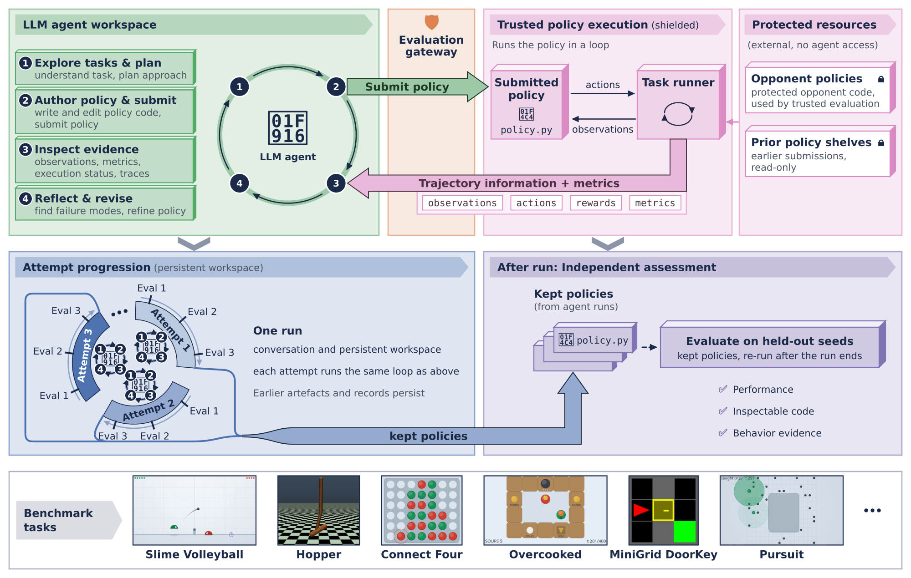
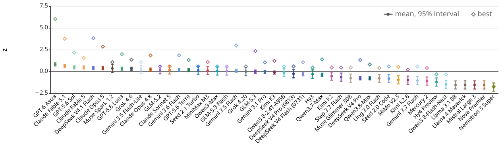
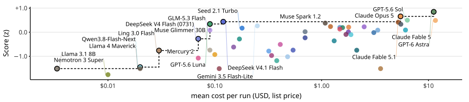
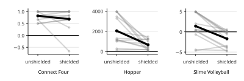
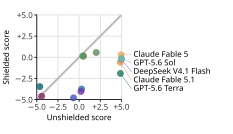
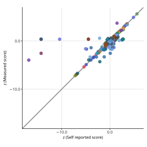
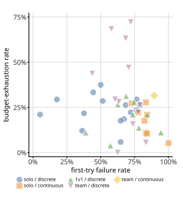
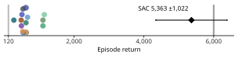

Yingtao Tian / Sakana AI / alantian@sakana.ai / @alanyttian
def act(obs): return action▌
Motivation
A score says how well. It rarely says how.
Agents as "one-off" solvers
Produce answers or actions for one task instance, leaving no reusable decision rule
Internal decision processes remain difficult to interpret
Success scores alone can conceal shortcuts or other sources of gains (Kapoor 2024, 2026)
Even explicit reasoning traces can hide intent once optimized for (Baker 2025)
Agents as authors of code policies
Strategy expressed as an executable policy: observations in, actions out
Run repeatedly and evaluated independently after the agent finishes
Human-interpretable and inspectable: read the strategy behind the score
Heuristics accumulate through refinement with execution feedback
Useful evaluations should expose fine-grained traits in how agents solve problems, concretely and interpretably.
Background
From code-as-policy to Heuristic Learning
1Programs from traces and examples: recursive programs from problem-solving traces; RobustFill2006 / 2017
2LEAPS: code search connected to interpretable policies2021
3Code as Policies, ProgPrompt: executable policies and plans for robots2023
4FunSearch, Evolution of Heuristics, AlphaEvolve: search executable code, refine by execution2024 / 2025
5Heuristic Learning: a coding agent tests and revises code policies using execution feedbackWeng 2026
Shared property
The resulting policy code, with strategies ("heuristics") accumulated through refinement, can be run repeatedly and inspected independently after the agent finishes authoring it.
Our move: use the agent's ability to author code policies as the basis for comparing models across a shared collection of tasks.
Related work
Five threads, one benchmark design
Thread
Examples
What we take from it
Agent benchmarks
SWE-bench, Terminal-Bench, MLE-bench, ProgramBench, Agents' Last Exam, ALE-Bench, CyberGym
Emphasis on developing executable policies, scoring both performance and strategy
Validity & contamination
LiveCodeBench, LiveBench, "Every model cheats", reward-hacking monitors
Heuristic Bench: agents author policies; a separate process measures them; the code stays for inspection.
Method
Heuristic Bench in one picture

The agent authors a policy as code in an isolated workspace.A shielded platform runs it and returns trajectories + metrics.Opponents and prior policies stay protected.Attempts accumulate in one run;kept policies are re-measured on held-out seeds.Across 45 tasks.
Method: the loop
Author, submit, read the evidence, revise
1Explore tasks & plan: understand the task, plan an approach
2Author policy & submit: write and edit policy code
4Reflect & revise: find failure modes, refine the policy
At each step of an episode, the platform gives observations to the policy, receives its actions, and advances the task. The agent is free to take several such steps.
Shielding, part 1: the workspace
The agent's workspace is isolated: it cannot freely probe the evaluation infrastructure or search the internet. Capable agents may find shortcuts easier than solving the intended problem.
Shielding, part 2: the execution
The platform verifies submitted code and runs it under controlled conditions, keeping attempt artifacts for measurement and human inspection.
Within these boundaries the agent keeps substantial freedom: what to submit, what lessons to draw, how to use tools, including its own test scripts.
Method: attempts
One run, many attempts, a persistent workspace
An attempt is one complete interaction: possibly several submissions, then a final policy
Each run is one continuous agent conversation; the next attempt starts in a new directory
Conversation (subject to context compaction) and the entire workspace persist: earlier policies, trial records, analyses, tools. No platform reset.
Before a new policy: a written analysis of the previous attempt's failures. After evaluation: a self-report.
Proposed lessons are harvested after the run and, after human review, seed future runs, not the next attempt
Per-run budget
30 min wall clock12-attempt target15 min liveness watchdogmemory captoken cap
Token cap set high enough that wall-clock time binds first.
Why multiple attempts
Observe whether agents find better policies with accumulated feedback, in the line of Reflexion, ADAS, and the Darwin Gödel Machine.
Method: implementation
A full task contract, no strategy hints
The brief
General instructions on goal and tools, then task-specific specs:
Authoring seeds are separate from measurement seeds. Protocols, model-task assignments, and run specs are fixed and tagged before launch.
Isolation with Bubblewrap; two access levels:
unshielded
shielded
Task code & runtime in workspace
readable, invokable
withheld
Opponents, prior run artifacts
readable
withheld
Testing policies
locally
via the platform
Baseline protections, tools, submission protocol
identical
Submitted policies pass import checks and run in a separate restricted sandbox; evaluation runs outside the agent's sandbox.
Method: what shielding blocks
The shortcut: copy the world, then search it
01
Intended target
A policy that acts using the task's permitted information within execution limits.
02
Observed shortcut
Copy opponent and task implementation code to run A* search: every step evaluates candidate actions by exactly simulating opponent and dynamics. Often a very slow policy.
03
Countermeasure
Shield task and opponent code; enforce time and memory limits in protected execution. Modelling dynamics from observations and public rules stays allowed.
Powerful models exploit access to existing solutions when shielding is disabled. We measure how much, later.
(1) a broad range of performance differences, with room for powerful models; (2) evaluable within reasonable time and cost; (3) calibration against non-LLM baselines.
Metrics
Comparable across tasks, honest about uncertainty
Per-task standardization
Each run's champion is selected by independent scoring under the frozen protocol.
z score: magnitude of gaps
Percentile (0–100): relative standing
Model-caused failures score at the random-policy floor; infrastructure failures are rerun.
Aggregation
Empirical-Bayes one-way random-effects model over run-level scores:
posterior means + 95% posterior intervals
rank intervals from 4,000 Monte Carlo draws
Shrinks models with few runs toward the overall mean. Best = highest single run; does not set the ranking.
Finer-grained traits
First Attempt Ace Rate: fraction of runs whose first attempt is the champion
All Attempts: fraction of attempts yielding a measured score
Cost & time per full run
Separates authoring a valid policy from authoring one that solves the task.
Setup
47 models, three harnesses
5
Claude Code
Anthropic models at maximum reasoning
4
Codex
OpenAI models at high reasoning
38
OpenCode
via OpenRouter at high reasoning, pinned endpoints
All harnesses run headlessly. Coverage varies by model. Routing-based services (Fugu, Fugu Ultra) are analysed separately, outside the primary comparison.
What does the benchmark reveal about differences in LLM capability?
Results: ranking
The leaderboard, with intervals

Posterior z mean and 95% empirical-Bayes interval (dots, bars) and best single run (diamonds), 47 models.
GPT-6 Astra has the highest posterior z and percentile means, but the leaders' intervals overlap.
Peak single-run scores do not always translate into a high overall ranking.
Best excludes imputed failure scores and does not determine the ranking.
Results: key metrics
Ten highlighted models
Posterior z
Percentile
Attempt rate
Per full run
Model
Mean
95% I
Best
Mean
95% I
Best
First
All
Cost
Time
GPT-6 Astra
+0.846
[+0.66, +1.03]
+6.043
81
[76, 86]
100
2%
100%
$11.20
24.8
Claude Fable 5.1
+0.658
[+0.48, +0.84]
+3.787
70
[65, 75]
100
29%
100%
$5.48
16.5
GPT-5.6 Sol
+0.499
[+0.32, +0.68]
+2.188
71
[66, 76]
100
3%
100%
$6.34
24.8
Claude Fable 5
+0.489
[+0.31, +0.67]
+1.583
68
[63, 73]
98
19%
100%
$11.62
21.0
DeepSeek V4.1 Flash
+0.436
[+0.26, +0.62]
+3.851
62
[57, 67]
100
41%
96%
$0.12
14.5
Claude Opus 5
+0.413
[+0.23, +0.60]
+2.879
65
[60, 70]
100
12%
100%
$5.21
21.5
Muse Spark 1.2
+0.378
[−0.09, +0.85]
+1.093
48
[35, 62]
84
11%
100%
$1.08
10.5
GPT-5.6 Luna
+0.340
[+0.16, +0.52]
+2.016
58
[53, 63]
92
10%
99%
$0.09
18.0
Grok 4.6
+0.331
[+0.14, +0.52]
+1.377
63
[58, 68]
94
7%
99%
$5.51
22.3
Gemini 3.5 Flash-Lite
+0.265
[−0.21, +0.74]
+1.093
49
[36, 62]
84
22%
97%
$0.25
2.3
Top by posterior mean, yet a First-attempt rate of only 2%.Competitive performance at a fraction of the cost: $0.09 to $0.12 per run.Even for frontier models, the best policy often emerges only after further attempts.
Results: cost
Performance versus cost: a Pareto frontier

Mean cost per run (log scale, list price) versus posterior z. Dashed: Pareto frontier on point estimates; models near it are highlighted, since uncertainty limits strict dominance claims.
Frontier
Models for which no cheaper alternative achieves a higher posterior z mean.
Cheap and strong
GPT-5.6 Luna and DeepSeek V4.1 Flash cost less per run than other leading models.
Shorter runs
Competitive performance is available at substantially lower cost and shorter run times.
Results: iterative improvement
Does the best policy improve with more attempts?
Running-best score across policy-authoring attempts for selected tasks and models. Dots mark improvements.
Individual trajectories show different paces of improvement
Several attempts may pass before the next improvement
A new policy can be worse; best-so-far cannot decrease, since earlier policies remain
Results: iterative improvement
Best-so-far, mean within-task z, after each attempt
Model
1
2
3
4
5
6
7
8
9
10
11
12
GPT-6 Astra
−22.04
−0.77
−0.06
+0.22
+0.45
+0.53
+0.58
+0.66
+0.70
+0.77
+0.85
+0.91
Claude Fable 5.1
−0.21
+0.42
+0.51
+0.55
+0.59
+0.60
+0.61
+0.61
+0.61
+0.61
+0.61
+0.61
GPT-5.6 Sol
−26.79
−1.14
−0.14
+0.01
+0.19
+0.36
+0.41
+0.42
+0.45
+0.48
+0.49
+0.49
Claude Fable 5
−19.58
+0.06
+0.17
+0.28
+0.33
+0.36
+0.36
+0.36
+0.36
+0.36
+0.36
+0.36
DeepSeek V4.1 Flash
−0.09
+0.34
+0.45
+0.50
+0.50
+0.51
+0.51
+0.51
+0.51
+0.51
+0.51
+0.51
Claude Opus 5
−23.63
−0.12
+0.16
+0.23
+0.26
+0.32
+0.34
+0.34
+0.34
+0.34
+0.34
+0.34
Muse Spark 1.2
−1.13
−0.47
−0.32
−0.32
−0.01
−0.01
+0.06
+0.06
+0.06
+0.06
+0.06
+0.06
GPT-5.6 Luna
−21.08
−0.43
−0.09
+0.09
+0.18
+0.20
+0.23
+0.25
+0.29
+0.30
+0.31
+0.31
Grok 4.6
−20.13
−0.19
+0.05
+0.13
+0.24
+0.27
+0.28
+0.28
+0.29
+0.29
+0.29
+0.30
Gemini 3.5 Flash-Lite
−1.39
−0.50
−0.26
−0.26
−0.26
−0.26
+0.00
+0.00
+0.00
+0.00
+0.00
+0.00
Keeps climbing through attempt 12.Others plateau early, after strong first attempts.The 12-attempt limit is a useful window for both rapid gains and slower improvement.
z is standardized on final champions' scores, so weak early policies can get large negative values. One selected run per task.
Results: shielding
Ability, or access to existing solutions?

Unshielded-to-shielded scores. Grey: paired runs of one model. Dark: means.

Slime Volleyball paired scores.
Same task, model, repeat, and budget; only the shielding changes. Separate from the main ranking.
Large drops on the challenging Slime Volleyball and Hopper; small drops on Connect Four, where many agents nearly reach the ceiling anyway.
Strong unshielded scores fall sharply, including for Claude Fable 5.1 and GPT-5.6 Sol, both highly ranked.
Results: inspection
What the unshielded champions actually did
Slime Volleyball · Qwen3.8-Max
Second file read: the baseline RNN opponent's source, including its weights. The same values appear in the champion.
Shielded: the search for the opponent returns nothing; it predicts the ball's landing point instead.
Slime Volleyball · Claude Fable 5.1
Three reads of a prior champion, six of a reference policy. The champion's docstring:
"""... a bit-faithful re-implementation of the kernel physics (read from the env source) plus a copy of the opponent RNN's public weights ..."""
Shielded: plans contacts from ball dynamics, without simulating the opponent.
Hopper · Kimi-K3, then GLM-5.3
Kimi-K3 copies an available ARS-trained MLP controller; GLM-5.3 then copies that shelf champion in its first attempt:
# attempt_01: transcribe + re-derive the shelf champion (kimi-k3 a04, ARS mlp16)
Shielded: prior policies are hidden; only an untuned, hand-written driver remains.
Capable models direct their problem-solving ability toward unintended shortcuts. Instructions alone are not enough.
Analysis: inspectable policy
Reading a champion: GPT-6 Astra plays Slime Volleyball
One game: the agent-authored policy scores against the RNN baseline. Best shielded champion: +0.663 over 1,000 held-out episodes.
74path = flight(bx,by,bvx,bvy)
75lx = next((p[0] for p in path if p[1]<3.2),path[-1][0])
83for jump in (0,1) if y < 1.51else (0,):97for target insorted(targets):114 attack = shot(px,py,outx,outy,ox)
115 setting = setup_score(px,py,outx,outy,sx) if not armed else -100116 score = max(attack,setting)-0.012*i
Predict the ball's flight and landing point
Search over jump choices and horizontal movement targets
Compare attacking shots with setup contacts, then act
Analysis: policies and self-reports
Longer code, stronger model? Honest self-reports?
Median policy length (SLOC) vs z, per model.
Model level: r = +0.54. Single policies: only r = +0.14. Length reflects a model's capacity and traits; longer is not necessarily stronger.

Self-reported vs independently measured z.
Agreement in 74% of cases (1% tolerance). Objectively scored trajectories may help; still, overestimates outnumber underestimates.
Inspect policies, and measure them independently.
Analysis: invocation and routing
Versions, thinking tiers, and routing-based models
Joint refit over 49 models, adding the routing-based Fugu and Fugu Ultra.
Model versions
Uneven gains across matched tasks: DeepSeek on discrete puzzles; Claude and Gemini on continuous control and multiplayer games. Some regressions.
Thinking tiers
Initial look (4 models, 3 tasks): no consistent benefit above high. Motivates a systematic study.
Routing
Fugu Ultra and Fugu perform comparably to GPT-6 Astra and Claude Fable 5.1: routing is a promising approach.
Analysis: task difficulty
An atlas of difficulty, and where code policies stall

First-try failure vs budget exhaustion, per task.
First-try failure: the champion is found after attempt 1. Budget exhaustion: the run stops at its token or wall-clock limit. They can coexist with finding the best policy early.
Hopper: best code policy exceeds the solved threshold and PPO (3,546).

Humanoid: a large gap to SAC (5,363) remains.
Stable-Baselines3 baselines with fixed training budgets, 30 deterministic episodes; training procedures and interaction budgets differ.
Analysis: agreement
Across tasks, and against established benchmarks
Kendall's τb between model rankings per task pair.
528 eligible pairs across 33 tasks: median τb = +0.298, with 73 negative. Scores are only partially correlated across tasks.
Public leaderboard
Shared
τb
Agents' Last Exam
15
+0.600
ALE-Bench
37
+0.570
DeepSWE v1.1
20
+0.400
Chartography
22
+0.399
Terminal-Bench 2.1
23
+0.258
NL2Repo-Bench
13
+0.026
Selected from 15 leaderboards with at least five shared models.
Evaluate across diverse tasks; positive but imperfect agreement means distinct evidence.